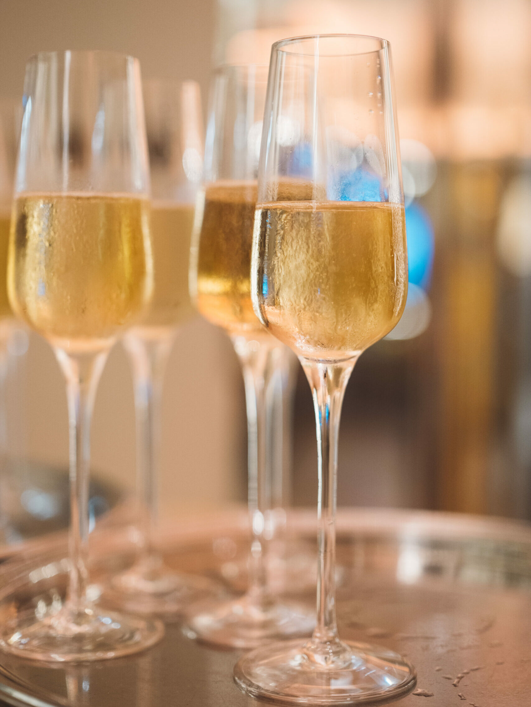
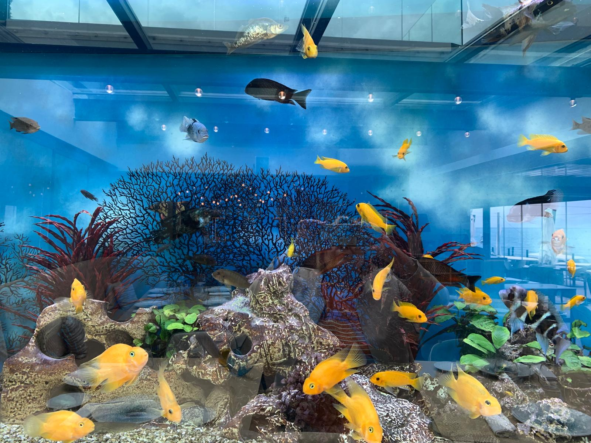
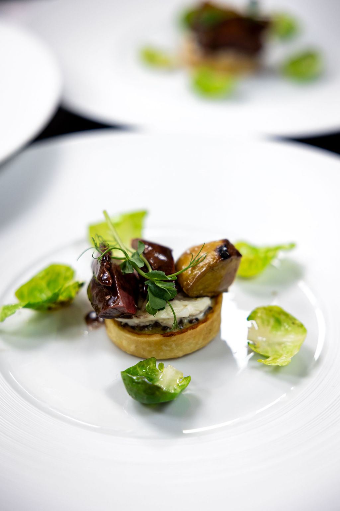

Institution gastronomique face à la mer, depuis 1948
Maison de Bacon
Cuisine marine du Chef Nicolas Davouze
Réserver une tableLe Renouveau
Une institution
réinventée.
Inaugurée en 1948 sur la pointe du Cap, la Maison de Bacon a écrit l'un des plus beaux chapitres de la gastronomie azuréenne. Reprise par des amoureux de la table, la maison se réinvente sans rien renier de ce qui fait sa légende — la mer, le feu, la rigueur d'un classique.
Trois lieux composent désormais l'expérience : le restaurant historique, l'Appartement de Victor pour les tables privées, et le tout nouveau Roof Top Club, terrasse panoramique ouverte sur la Méditerranée.

Trois Univers
Une maison,
trois adresses.
Le restaurant pour la table d'institution, l'Appartement de Victor pour l'intime, le Roof Top Club pour la fin du jour. Chacun avec sa propre identité, tous avec la même mer pour toile de fond.

Le Chef
Nicolas Davouze
Bocuse d'Or France · ancien du Bristol
Formé à l'Institut Bocuse, lauréat Bocuse d'Or France, passé par les cuisines du Bristol à Paris, Nicolas Davouze a fait de la mer son langage. Soupe de roche, bouillabaisse, poissons entiers grillés au feu de bois — il revisite les classiques de Bacon avec la précision d'un horloger.
Sa carte change avec la marée. Les agrumes viennent de Mr Roméo, les œufs de la ferme de Gabin. Tout, ici, a un nom et un visage.
& Millau 2024
Gault & Millau
Guide Michelin
Côte d'Azur
À la Maison · 31 mai 2026
Fête des Mères
Un menu d'exception
pour toutes les mamans.
À l'occasion de la Fête des Mères, la Maison de Bacon célèbre toutes les mamans avec un menu pensé comme une parenthèse de douceur. Face au spectacle de la Méditerranée, le Chef Nicolas Davouze compose en cinq services.

«Une institution gastronomique
» — Gault & Millau
«Vue parmi les plus belles de la Côte
» — Guide Michelin
«Une renaissance maîtrisée
» — Vogue Hospitality
Réservation
Une table, face à la mer.
Réservation en ligne ouverte 24h/24. Pour les groupes de plus de 8 couverts, les privatisations et les événements, contactez-nous directement.
Réserver en ligne